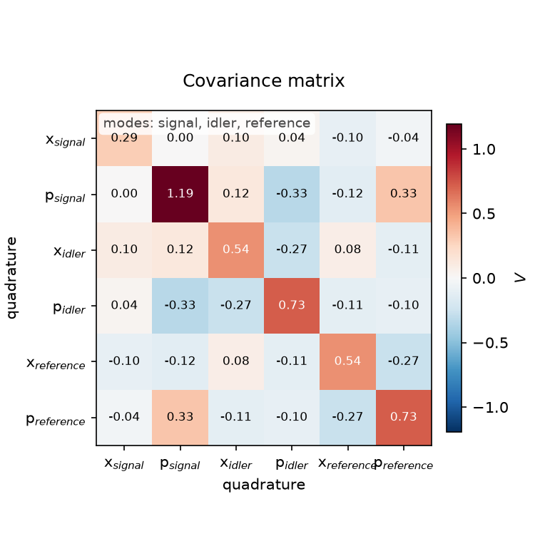
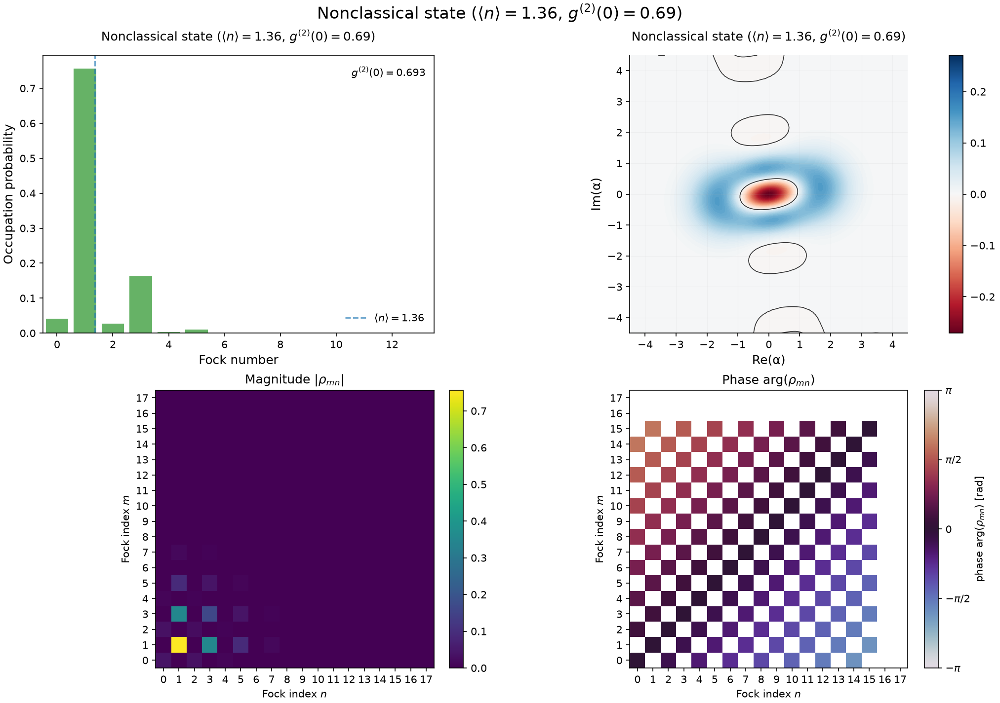
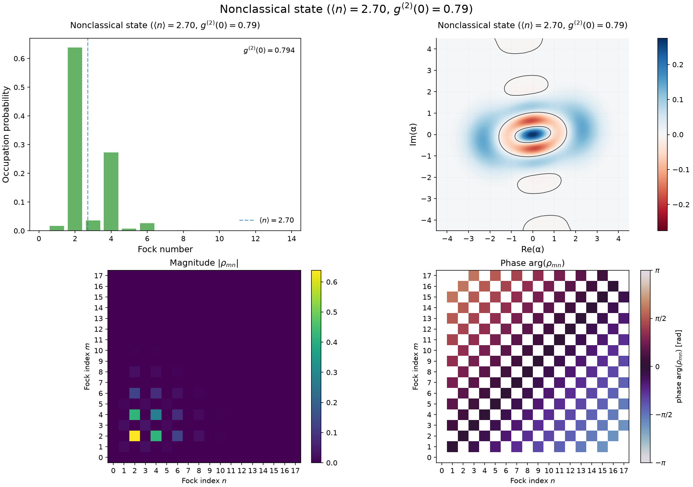
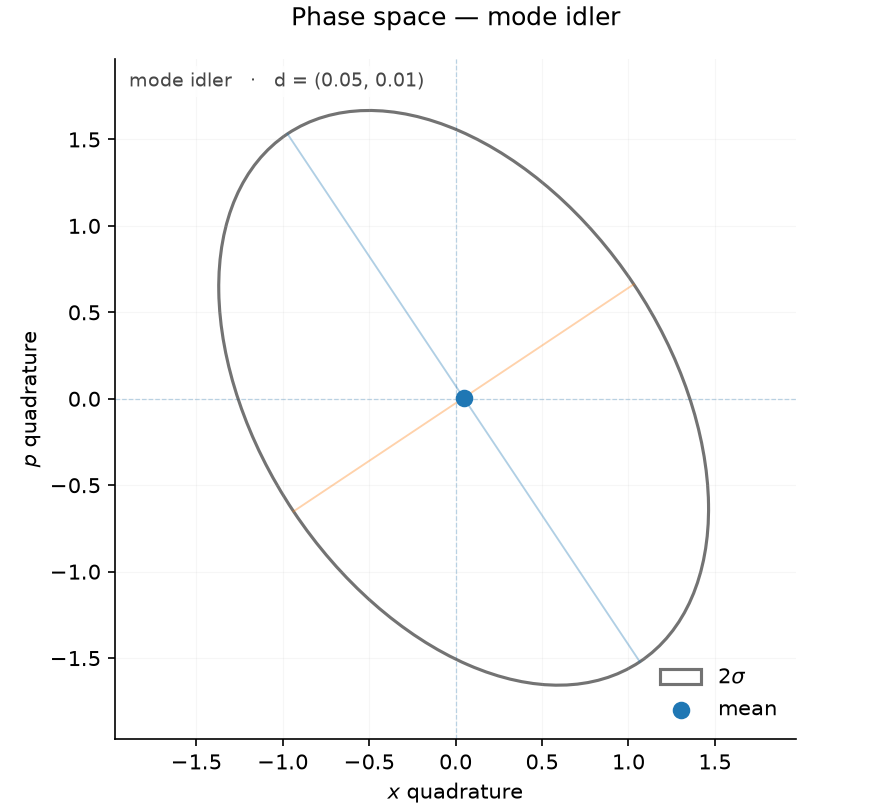

01

Gaussian preparation
Prepare and couple the three-mode Gaussian state.
A visual record of the Catsy complex example: three-mode Gaussian state preparation, heralded Fock-space processing, lossy Mach–Zehnder interferometry, and complementary homodyne / heterodyne measurements.
43395974974b10 plots1 journal filesFrom Gaussian preparation to two independent signal readouts.
Each card links directly to the diagnostic produced at that point in the experiment.
Prepare and couple the three-mode Gaussian state.

Inspect covariance and inter-mode correlations.

Visualize the correlations created by the Gaussian circuit.

Prepare the non-Gaussian even Schrödinger cat.

Inspect the cat in the Fock basis and phase space.

Apply a lossy, detector-limited subtraction event.

Follow subtraction with realistic photon addition.
Probe the processed state across a lossy phase scan.

Condition the Gaussian state on a signal quadrature measurement.

Condition the Gaussian state on simultaneous x/p detection.

Compare the conditioned phase-space states.
Full-resolution Catsy diagnostics. Click any image to inspect it without leaving the report.
Raw journal output is preserved beside the plots for reproducibility.